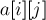
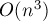

MAXimal
добавлено: 10 Jun 2008 22:59
редактировано: 23 Aug 2012 18:00
Содержание [скрыть]
Венгерский алгоритм решения задачи о назначениях
Постановка задачи о назначениях
Задача о назначениях ставится весьма естественно.
Приведём несколько вариантов постановки (как легко видеть, все они эквивалентны друг другу):
- Есть
 рабочих и заданий. Для каждого рабочего известно, сколько денег он запросит за выполнение того или иного задания. Каждый рабочий может взять себе только одно задание. Требуется распределить задания по рабочим так, чтобы минимизировать суммарные расходы.
рабочих и заданий. Для каждого рабочего известно, сколько денег он запросит за выполнение того или иного задания. Каждый рабочий может взять себе только одно задание. Требуется распределить задания по рабочим так, чтобы минимизировать суммарные расходы. - Дана матрица
 размера
размера  . Требуется в каждой её строке выбрать по одному числу так, чтобы в любом столбце также было выбрано ровно по одному числу, и при этом сумма выбранных чисел была бы минимальной.
. Требуется в каждой её строке выбрать по одному числу так, чтобы в любом столбце также было выбрано ровно по одному числу, и при этом сумма выбранных чисел была бы минимальной. - Дана матрица размера . Требуется найти такую перестановку
 длины , что величина — минимальна.
длины , что величина — минимальна. - Дан полный двудольный граф с вершинами; каждому ребру приписан некоторый вес. Требуется найти совершенное паросочетание минимального веса.
Отметим, что все приведённые выше постановки "квадратны": в них обе размерности всегда совпадают (и равны ). На практике часто встречаются аналогичные "прямоугольные" постановки, когда , и надо выбрать  элементов. Впрочем, как легко заметить, от "прямоугольной" задачи всегда можно перейти к "квадратной", добавив строки/столбцы с нулевыми/бесконечными значениями соответственно.
элементов. Впрочем, как легко заметить, от "прямоугольной" задачи всегда можно перейти к "квадратной", добавив строки/столбцы с нулевыми/бесконечными значениями соответственно.
Также заметим, что по аналогии с поиском минимального решения также можно ставить задачу поиска максимального решения. Впрочем, эти две задачи эквивалентны друг другу: достаточно все веса умножить на  .
.
Венгерский алгоритм
Историческая справка
Алгоритм был разработан и опубликован Гарольдом Куном (Harold Kuhn) в 1955 г. Сам Кун дал алгоритму название "венгерский", потому что он был в значительной степени основан на более ранних работах двух венгерских математиков: Денеша Кёнига (Dénes Kőnig) и Эйгена Эгервари (Jenő Egerváry).
В 1957 г. Джеймс Манкрес (James Munkres) показал, что этот алгоритм работает за (строго) полиномиальное время (т.е. за время порядка полинома от , не зависящего от величины стоимостей).
Поэтому в литературе данный алгоритм известен не только как "венгерский", но и как "алгоритм Куна-Манкреса" или "алгоритм Манкреса".
Впрочем, недавно (в 2006 г.) выяснилось, что точно такой же алгоритм был изобретён за век до Куна немецким математиком Карлом Густавом Якоби (Carl Gustav Jacobi). Дело в том, что его работа "About the research of the order of a system of arbitrary ordinary differential equations", напечатанная посмертно в 1890 г., содержавшая помимо прочих результатов и полиномиальный алгоритм решения задачи о назначениях, была написана на латыни, а её публикация прошла незамеченной среди математиков.
Также стоит отметить, что первоначальный алгоритм Куна имел асимптотику  , и лишь позже Джек Эдмондс (Jack Edmonds) и Ричард Карп (Richard Karp) (и независимо от них Томидзава (Tomizawa)) показали, каким образом улучшить его до асимптотики
, и лишь позже Джек Эдмондс (Jack Edmonds) и Ричард Карп (Richard Karp) (и независимо от них Томидзава (Tomizawa)) показали, каким образом улучшить его до асимптотики  .
.
Построение алгоритма за 
Сразу отметим во избежание неоднозначностей, что мы в основном рассматриваем здесь задачу о назначениях в матричной постановке (т.е. дана матрица , и надо выбрать из неё ячеек, находящихся в разных строках и столбцах). Индексацию массивов мы начинаем с единицы, т.е., например, матрица имеет индексы .
Также мы будем считать, что все числа в матрице ![a[][]](../tex2png/cache/f9fa957c4ed546b728381d1556189238.png) неотрицательны (если это не так, то всегда можно перейти к неотрицательной матрице, прибавив ко всем числам некоторое число).
неотрицательны (если это не так, то всегда можно перейти к неотрицательной матрице, прибавив ко всем числам некоторое число).
Назовём потенциалом два произвольных массива чисел и таких, что выполняется условие:
![u[i] + v[j] \le a[i][j] ~~~~ (i = 1 \ldots n, ~~ [...]](../tex2png/cache/8ce779ac0166a3bb19321dcf16010394.png)
(Как видно, числа соответствуют строкам, а числа — столбцам матрицы.)
Назовём значением  потенциала сумму его чисел:
потенциала сумму его чисел:
С одной стороны, легко заметить, что стоимость искомого решения не меньше значения любого потенциала:
(Доказательство. Искомое решение задачи представляет из себя ячеек матрицы, и для каждой из них выполняется условие . Поскольку все элементы находятся в разных строках и столбцах, то, суммируя эти неравенства по всем выбранным , в левой части неравенства получаем , а в правой — , что и требовалось доказать.)
С другой стороны, оказывается, что всегда существует решение и потенциал, на которых это неравенство обращается в равенство. Венгерский алгоритм, описанный ниже, будет конструктивным доказательством этого факта. Пока же лишь обратим внимание на то, что если какое-либо решение имеет стоимость, равную по величине какому-либо потенциалу, то это решение — оптимально.
Зафиксируем некоторый потенциал. Назовём ребро жёстким, если выполняется:
Вспомним об альтернативной постановке задачи о назначениях, с помощью двудольного графа. Обозначим через двудольный граф, составленный только из жёстких рёбер. Фактически, венгерский алгоритм поддерживает для текущего потенциала максимальное по количеству рёбер паросочетание  графа : и как только это паросочетание станет содержать рёбер, рёбра этого паросочетания и будут являться искомым оптимальным решением (ведь это будет решение, стоимость которого совпадает с величиной потенциала).
графа : и как только это паросочетание станет содержать рёбер, рёбра этого паросочетания и будут являться искомым оптимальным решением (ведь это будет решение, стоимость которого совпадает с величиной потенциала).
Перейдём непосредственно к описанию алгоритма.
- В начале алгоритма потенциал полагается равным нулю , и паросочетание полагается пустым.
- Далее, на каждом шаге алгоритма мы пытаемся, не меняя потенциала, увеличить мощность текущего паросочетания на единицу (напоминаем, паросочетание ищется в графе жёстких рёбер ).
Для этого фактически используется обычный алгоритм Куна поиска максимального паросочетания в двудольных графах. Напомним здесь этот алгоритм.
Все рёбра паросочетания
ориентируются по направлению от второй доли к первой, все остальные рёбра графа ориентируются в противоположную сторону.Напомним (из терминологии поиска паросочетаний), что вершина называется насыщенной, если ей смежно ребро из текущего паросочетания. Вершина, которой не смежно ни одно ребро из текущего паросочетания, называется ненасыщенной. Путь нечётной длины, в котором первое ребро не принадлежит паросочетанию, а для всех последующих рёбер происходит чередование (принадлежит/не принадлежит) — называется увеличивающим путём.
Из всех ненасыщенных вершин первой доли запускается обход в глубину/в ширину. Если в результате обхода удалось достигнуть ненасыщенной вершины второй доли, то это означает, что мы нашли увеличивающий путь из первой доли во вторую. Если прочередовать рёбра вдоль этого пути (т.е. первое ребро включить в паросочетание, второе исключить, третье включить, и т.д.), то тем самым мы увеличим мощность паросочетания на единицу.
Если же увеличивающего пути не было, то это означает, что текущее паросочетание
— максимально в графе , поэтому в таком случае переходим к следующему пункту. - Если на текущем шаге не удалось увеличить мощность текущего паросочетания, то производится некий пересчёт потенциала таким образом, чтобы на следующих шагах появилось больше возможностей для увеличения паросочетания.
Обозначим через множество вершин первой доли, которые были посещены обходом алгоритма Куна при попытке поиска увеличивающей цепи; через — множество посещённых вершин второй доли.
Посчитаем величину
 :
:Эта величина строго положительна.
(Доказательство. Предположим, что . Тогда существует жёсткое ребро , причём и
 . Из этого следует, что ребро должно было быть ориентированным от второй доли к первой, т.е. это жёсткое ребро должно входить в паросочетание . Однако это невозможно, т.к. мы не могли попасть в насыщенную вершину
. Из этого следует, что ребро должно было быть ориентированным от второй доли к первой, т.е. это жёсткое ребро должно входить в паросочетание . Однако это невозможно, т.к. мы не могли попасть в насыщенную вершину  , кроме как пройдя по ребру из
, кроме как пройдя по ребру из  в . Пришли к противоречию, значит, 0">.)
в . Пришли к противоречию, значит, 0">.)Теперь пересчитаем потенциал таким образом: для всех вершин сделаем , а для всех вершин — сделаем . Получившийся потенциал по-прежнему останется корректным потенциалом.
(Доказательство. Для этого надо показать, что по-прежнему для всех
и выполняется: . Для случаев, когда или — это так, поскольку для них сумма и не изменилась. Когда — неравенство только усилилось. Наконец, для случая — хотя левая часть неравенства и увеличивается, неравенство всё равно сохраняется, поскольку величина , как видно по её определению — это как раз максимальное увеличение, не приводящее к нарушению неравенства.)Кроме того, старое паросочетание
из жёстких рёбер можно будет оставить, т.е. все рёбра паросочетания останутся жёсткими.(Доказательство. Чтобы некоторое жёсткое ребро перестало быть жёстким в результате изменения потенциала, надо, чтобы равенство превратилось в неравенство . Однако левая часть могла уменьшиться только в одном случае: когда . Но раз , то это означает, что ребро не могло быть ребром паросочетания, что и требовалось доказать.)
Наконец, чтобы показать, что изменения потенциала не могут происходить бесконечно, заметим, что при каждом таком изменении потенциала количество вершин, достижимых обходом, т.е.
 , строго увеличивается. (При этом нельзя утверждать, что увеличивается количество жёстких рёбер.)
, строго увеличивается. (При этом нельзя утверждать, что увеличивается количество жёстких рёбер.)(Доказательство. Во-первых, любая вершина, которая была достижимой, достижимой и останется. В самом деле, если некоторая вершина достижима, то до неё есть некоторый путь из достижимых вершин, начинающийся в ненасыщенной вершине первой доли; а поскольку для рёбер вида
 сумма не меняется, то весь этот путь сохранится и после изменения потенциала, что и требовалось доказать. Во-вторых, покажем, что в результате пересчёта потенциала появилась хотя бы одна новая достижимая вершина. Но это почти очевидно, если вернуться к определению : то ребро , на котором был достигнут минимум, теперь станет жёстким, а, значит, вершина станет достижимой благодаря этому ребру и вершине .)
сумма не меняется, то весь этот путь сохранится и после изменения потенциала, что и требовалось доказать. Во-вторых, покажем, что в результате пересчёта потенциала появилась хотя бы одна новая достижимая вершина. Но это почти очевидно, если вернуться к определению : то ребро , на котором был достигнут минимум, теперь станет жёстким, а, значит, вершина станет достижимой благодаря этому ребру и вершине .)Таким образом, всего может происходить не более
пересчётов потенциала, прежде чем обнаружится увеличивающая цепочка и мощность паросочетания будет увеличена.
Таким образом, рано или поздно будет найден потенциал, которому соответствует совершенное паросочетание , являющееся ответом на задачу.
Если говорить об асимптотике алгоритма, то она составляет , поскольку всего должно произойти увеличений паросочетания, перед каждым из которых происходит не более пересчётов потенциала, каждый из которых выполняется за время  .
.
Реализацию за мы здесь приводить не будем, поскольку она всё равно получится не короче, чем описанная ниже реализация за .
Построение алгоритма за ()
Научимся теперь реализовывать тот же алгоритм за асимптотику  (для прямоугольных задач  — ).
— ).
Ключевая идея: теперь мы будем добавлять в рассмотрение строки матрицы одну за одной, а не рассматривать их все сразу. Таким образом, описанный выше алгоритм примет вид:
- Добавляем в рассмотрение очередную строку матрицы .
- Пока нет увеличивающей цепи, начинающейся в этой строке, пересчитываем потенциал.
- Как только появляется увеличивающая цепь, чередуем паросочетание вдоль неё (включая тем самым последнюю строку в паросочетание), и переходим к началу (к рассмотрению следующей строки).
Чтобы достичь требуемой асимптотики, надо реализовать шаги 2-3, выполняющиеся для каждой строки матрицы, за время (для прямоугольных задач — за  ).
).
Для этого мы вспомним два факта, доказанных нами выше:
- При изменении потенциала вершины, которые были достижимы обходом Куна, достижимыми и останутся.
- Всего могло произойти лишь
 пересчётов потенциала, прежде чем будет найдена увеличивающая цепь.
пересчётов потенциала, прежде чем будет найдена увеличивающая цепь.
Отсюда вытекают ключевые идеи, позволяющие достичь требуемой асимптотики:
- Для проверки наличия увеличивающей цепочки нет необходимости запускать обход Куна заново после каждого пересчёта потенциала. Вместо этого можно оформить обход Куна в итеративном виде: после каждого пересчёта потенциала мы просматриваем добавившиеся жёсткие рёбра и, если их левые концы были достижимыми, помечаем их правые концы также как достижимые и продолжаем обход из них.
- Развивая эту идею дальше, можно прийти к такому представлению алгоритма: это цикл, на каждом шаге которого сначала пересчитывается потенциал, затем находится столбец, ставший достижимым (а таковой всегда найдётся, поскольку после пересчёта потенциала всегда появляются новые достижимые вершины), и если этот столбец был ненасыщен, то найдена увеличивающая цепь, а если столбец был насыщен — то соответствующая ему в паросочетании строка также становится достижимой.
Теперь алгоритм принимает вид: цикл добавления столбцов, на каждом из которых сначала пересчитывается потенциал, а затем какой-то новый столбец помечается как достижимый.
- Чтобы быстро пересчитывать потенциал (быстрее, чем наивный вариант за ), надо поддерживать вспомогательные минимумы по каждому из столбцов :
Как легко видеть, искомая величина
выражается через них следующим образом:Таким образом, нахождение
теперь можно произвести за .Поддерживать этот массив необходимо при появлении новых посещённых строк. Это, очевидно, можно сделать за
на одну добавляемую строку (что в сумме даст ). Также обновлять массив надо при пересчёте потенциала, что также делается за время на один пересчёт потенциала (поскольку меняется только для недостигнутых пока столбцов: а именно, уменьшается на ).
Таким образом, алгоритм принимает такой вид: во внешнем цикле мы добавляем в рассмотрение строки матрицы одну за другой. Каждая строка обрабатывается за время , поскольку при этом могло происходить лишь пересчётов потенциала (каждый — за время ), для чего за время поддерживается массив ; алгоритм Куна суммарно отработает за время (поскольку он представлен в форме итераций, на каждой из которых посещается новый столбец).
Итоговая асимптотика составляет — или, если задача прямоугольна, .
Реализация венгерского алгоритма за ()
Приведённая реализация фактически была разработана Андреем Лопатиным несколько лет назад. Её отличает удивительная лаконичность: весь алгоритм помещается в 30 строк кода.
Данная реализация ищет решение для прямоугольной входной матрицы , где . Матрица хранится в  -индексации в целях удобства и краткости кода. Дело в том, что в данной реализации вводятся фиктивные нулевая строка и нулевой столбец, что позволяет написать многие циклы в общем виде, без дополнительных проверок.
-индексации в целях удобства и краткости кода. Дело в том, что в данной реализации вводятся фиктивные нулевая строка и нулевой столбец, что позволяет написать многие циклы в общем виде, без дополнительных проверок.
Массивы и хранят потенциал. Изначально он нулевой, что верно для матрицы, состоящей из нуля строк. (Отметим, что для данной реализации не важно, имеются или нет в матрице отрицательные числа.)
Массив содержит паросочетание: для каждого столбца он хранит номер соответствующей выбранной строки ![p[i]](../tex2png/cache/6fa33a48f7fff7f52d08a07ab012145a.png) (или
(или  , если пока ничего не выбрано). При этом для удобства реализации полагается равным номеру текущей рассматриваемой строки.
, если пока ничего не выбрано). При этом для удобства реализации полагается равным номеру текущей рассматриваемой строки.
Массив содержит для каждого столбца вспомогательные минимумы, необходимые для быстрого пересчёта потенциала:
Массив содержит информацию о том, где эти минимумы достигаются, чтобы мы впоследствии смогли восстановить увеличивающую цепочку. На первый взгляд кажется, что в массиве для каждого столбца надо хранить номер строки, а также завести ещё один массив: для каждой строки запомнить номер столбца, из которого мы в неё пришли. Однако вместо этого можно заметить, что алгоритм Куна всегда попадает в строки, проходя по ребру паросочетания из столбцов, поэтому номера строк для восстановления цепочки всегда можно взять из паросочетания (т.е. из массива ![p[]](../tex2png/cache/f41743bb1304c4dfaee1474862f9de80.png) ). Таким образом, для каждого столбца содержит номер предшествующего столбца (или , если такого нет).
). Таким образом, для каждого столбца содержит номер предшествующего столбца (или , если такого нет).
Сам алгоритм представляет из себя внешний цикл по строкам матрицы, внутри которого происходит добавление в рассмотрение -ой строки матрицы. Внутренняя часть представляет собой цикл "do-while (p[j0] != 0)", который работает, пока не будет найден свободный столбец . Каждая итерация цикла помечает посещённым новый столбец с номером (посчитанным на прошлой итерации; а изначально равным нулю — т.е. стартуем мы с фиктивного столбца), а также новую строку — смежную ему в паросочетании (т.е. ; а изначально при  берётся -ая строка). Из-за появления новой посещённой строки нужно соответствующим образом пересчитать массив , заодно мы находим минимум в нём — величину
берётся -ая строка). Из-за появления новой посещённой строки нужно соответствующим образом пересчитать массив , заодно мы находим минимум в нём — величину  , и в каком столбце этот минимум был достигнут (заметим, что при такой реализации могло оказаться равной нулю, что означает, что на текущем шаге потенциал можно не менять: новый достижимый столбец есть и без того). После этого производится пересчёт потенциала
, и в каком столбце этот минимум был достигнут (заметим, что при такой реализации могло оказаться равной нулю, что означает, что на текущем шаге потенциал можно не менять: новый достижимый столбец есть и без того). После этого производится пересчёт потенциала ![u[], v[]](../tex2png/cache/de9eb494d50dffa3110fdf349ef9eccd.png) , соответствующее изменение массива . По окончании цикла "do-while" мы нашли увеличивающую цепочку, оканчивающуюся в столбце , "раскрутить" которую можно, пользуясь массивом предков .
, соответствующее изменение массива . По окончании цикла "do-while" мы нашли увеличивающую цепочку, оканчивающуюся в столбце , "раскрутить" которую можно, пользуясь массивом предков .
Константа — это "бесконечность", т.е. некоторое число, заведомо большее всех возможных чисел во входной матрице .
vector<int> u (n+1), v (m+1), p (m+1), way (m+1); for (int i=1; i<=n; ++i) { p[0] = i; int j0 = 0; vector<int> minv (m+1, INF); vector<char> used (m+1, false); do { used[j0] = true; int i0 = p[j0], delta = INF, j1; for (int j=1; j<=m; ++j) if (!used[j]) { int cur = a[i0][j]-u[i0]-v[j]; if (cur < minv[j]) minv[j] = cur, way[j] = j0; if (minv[j] < delta) delta = minv[j], j1 = j; } for (int j=0; j<=m; ++j) if (used[j]) u[p[j]] += delta, v[j] -= delta; else minv[j] -= delta; j0 = j1; } while (p[j0] != 0); do { int j1 = way[j0]; p[j0] = p[j1]; j0 = j1; } while (j0); }
Восстановление ответа в более привычной форме, т.е. нахождение для каждой строки  номера выбранного в ней столбца , делается следующим образом:
номера выбранного в ней столбца , делается следующим образом:
vector<int> ans (n+1); for (int j=1; j<=m; ++j) ans[p[j]] = j;
Стоимость найденного паросочетания можно просто взять как потенциал нулевого столбца (взятый с противоположным знаком). В самом деле, как легко проследить по коду, содержит в себе сумму всех величин , т.е. суммарное изменение потенциала. Хотя при каждом изменении потенциала изменяться могли сразу несколько величин и , суммарное изменение величины потенциала в точности равно , поскольку пока нет увеличивающей цепи, число достижимых строк ровно на единицу больше числа достижимых столбцов (только текущая строка не имеет себе "пары" в виде посещённого столбца):
int cost = -v[0];
Примеры задач
Приведём здесь несколько примеров на решение задачи о назначениях: начиная от совсем тривиальных, и заканчивая менее очевидными задачами:
- Дан двудольный граф, требуется найти в нём паросочетание максимальное паросочетание минимального веса (т.е. в первую очередь максимизируется размер паросочетания, во вторую — минимизируется его стоимость).
Для решения просто строим задачу о назначениях, ставя на месте отсутствующих рёбер число "бесконечность". После этого решаем задачу венгерским алгоритмом, и удаляем из ответа рёбра бесконечного веса (они могли войти в ответ, если у задачи нет решения в виде совершенного паросочетания).
- Дан двудольный граф, требуется найти в нём паросочетание максимальное паросочетание максимального веса.
Решение опять же очевидно, только все веса надо умножить на минус единицу (либо в венгерском алгоритме заменить все минимумы на максимумы, а бесконечности — на минус бесконечности).
- Задача детектирования движущихся объектов по снимкам: было произведено два снимка, по итогам которых было получено два набор координат. Требуется соотнести объекты на первом и втором снимке, т.е. определить для каждой точки второго снимка, какой точке первого снимка она соответствовала. При этом требуется минимизировать сумму расстояний между сопоставленными точками (т.е. мы ищем решение, в котором объекты суммарно прошли наименьший путь).
Для решения мы просто строим и решаем задачу о назначениях, где в качестве весов рёбер выступают евклидовы расстояния между точками.
- Задача детектирования движущихся объектов по локаторам: есть два локатора, которые умеют определять не положение объекта в пространстве, а лишь направление на него. С обоих локаторов (расположенных в различных точках) поступила информация в виде таких направлений. Требуется определить положение объектов, т.е. определить предполагаемые положения объектов и соответствующие им пары направлений так, чтобы минимизировать сумму расстояний от объектов до лучей-направлений.
Решение — опять же, просто строим и решаем задачу о назначениях, где вершинами первой доли являются
направлений с первого локатора, вершинами второй доли — направлений со второго локатора, а весами рёбер — расстояния между соответствующими лучами. - Покрытие ориентированного ациклического графа путями: дан ориентированный ациклический граф, требуется найти наименьшее число путей (при равенстве — с наименьшим суммарным весом), чтобы каждая вершина графа лежала бы ровно в одном пути.
Решение — построить по данному графу соответствующий двудольный граф, и найти в нём максимальное паросочетание минимального веса. Более подробно см. отдельную статью.
- Раскраска дерева. Дано дерево, в котором каждая вершина, кроме листьев, имеет ровно
 сыновей. Требуется выбрать для каждой вершины некоторый цвет из
сыновей. Требуется выбрать для каждой вершины некоторый цвет из  цветов так, чтобы никакие две смежные вершины не имели одинакового цвета. Кроме того, для каждой вершины и каждого цвета известна стоимость покраски этой вершины в этот цвет, и требуется минимизировать суммарную стоимость.
цветов так, чтобы никакие две смежные вершины не имели одинакового цвета. Кроме того, для каждой вершины и каждого цвета известна стоимость покраски этой вершины в этот цвет, и требуется минимизировать суммарную стоимость.Для решения воспользуемся методом динамического программирования. А именно, научимся считать величину , где
 — номер вершины,
— номер вершины,  — номер цвета, а само значение — это минимальная стоимость раскраски вершины вместе с её потомками, причём сама вершина имеет цвет . Чтобы посчитать такую величину , надо распределить остальные цветов по сыновьям вершины , а для этого надо построить и решить задачу о назначениях (в которой вершины одной доли — цвета, вершины другой доли — вершины-сыновья, а веса рёбер — это значения соответствующих динамик
— номер цвета, а само значение — это минимальная стоимость раскраски вершины вместе с её потомками, причём сама вершина имеет цвет . Чтобы посчитать такую величину , надо распределить остальные цветов по сыновьям вершины , а для этого надо построить и решить задачу о назначениях (в которой вершины одной доли — цвета, вершины другой доли — вершины-сыновья, а веса рёбер — это значения соответствующих динамик ![d[][]](../tex2png/cache/2108d8213526c488460c3eb1fe11c115.png) ).
).Таким образом, каждая величина считается с помощью решения задачи о назначениях, что в итоге даёт асимптотику .
- Если в задаче о назначениях веса заданы не у рёбер, а у вершин, причём только у вершин одной доли, то можно обойтись без венгерского алгоритма, а достаточно лишь отсортировать вершины по весу и запустить обычный алгоритм Куна (более подробно см. отдельную статью).
- Рассмотрим следующий частный случай. Пусть каждой вершине первой доли приписано некоторое число , а каждой вершине второй доли — . Пусть вес любого ребра равен (числа и нам известны). Решить задачу о назначениях.
Для решения без венгерского алгоритма рассмотрим сначала случай, когда в обеих долях по две вершины. В этом случае, как нетрудно убедиться, выгодно соединять вершины в обратном порядке: вершину с меньшей соединить с вершиной с большей . Это правило легко обобщить на произвольное количество вершин: надо отсортировать вершины первой доли в порядке увеличения , второй доли — в порядке уменьшения , и соединять вершины попарно в таком порядке. Таким образом, мы получаем решение с асимптотикой
 .
. - Задача о потенциалах. Дана матрица . Требуется найти два массива и такие, что для любых и выполняется , но при этом сумма элементов массивов
![u[]](../tex2png/cache/df09cae95940e511f8d96cbe8d9ad6b7.png) и максимальна.
и максимальна.Зная венгерский алгоритм, решение этой задачи не составит никакого труда: венгерский алгоритм как раз находит именно такой потенциал
, который удовлетворяет условию задачи. С другой стороны, без знания венгерского алгоритма решить такую задачу представляется почти невозможным.
Литература
- Ravindra Ahuja, Thomas Magnanti, James Orlin. Network Flows [1993]
- Harold Kuhn. The Hungarian Method for the Assignment Problem [1955]
- James Munkres. Algorithms for Assignment and Transportation Problems [1957]
Задачи в online judges
Список задач на решение задачи о назначениях:
- UVA #10746 "Crime Wave – The Sequel" [сложность: низкая]
- UVA #10888 "Warehouse" [сложность: средняя]
- SGU #210 "Beloved Sons" [сложность: средняя]
- UVA #3276 "The Great Wall Game" [сложность: высокая]
- UVA #10296 "Jogging Trails" [сложность: высокая]